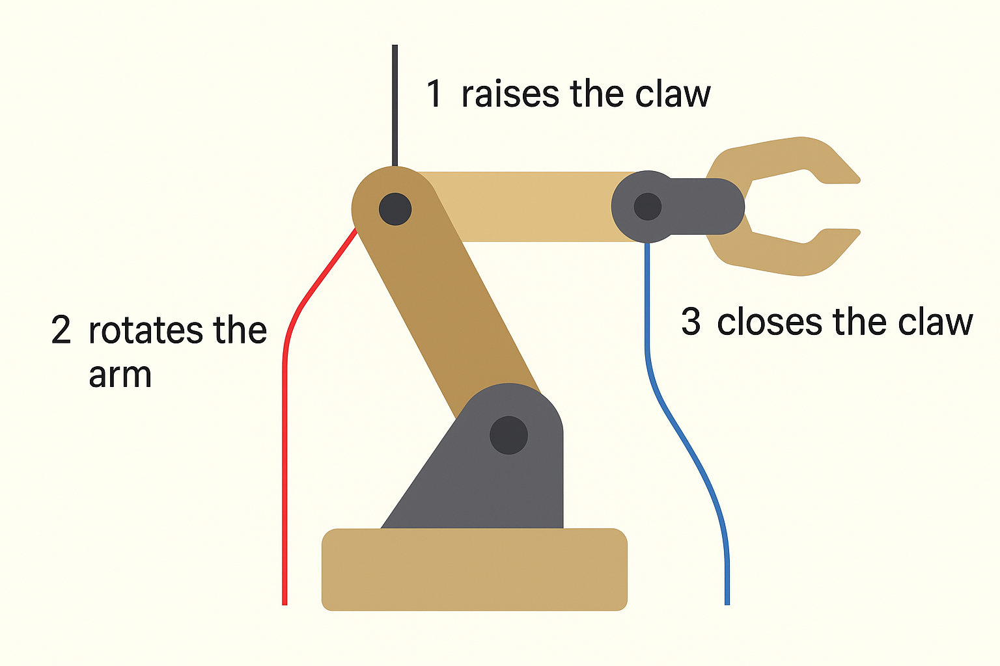
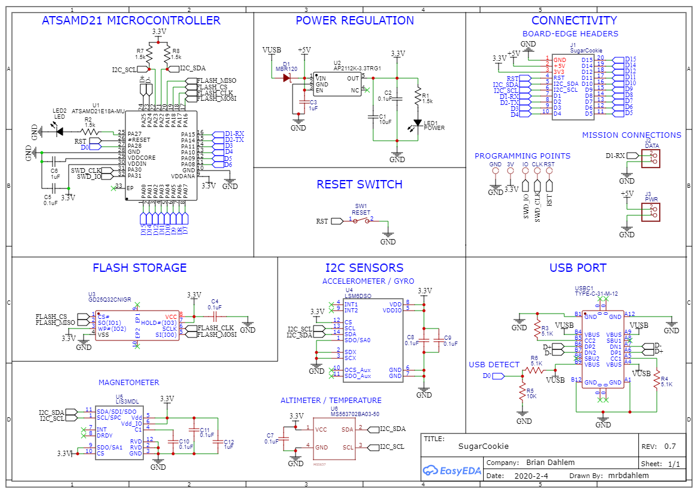
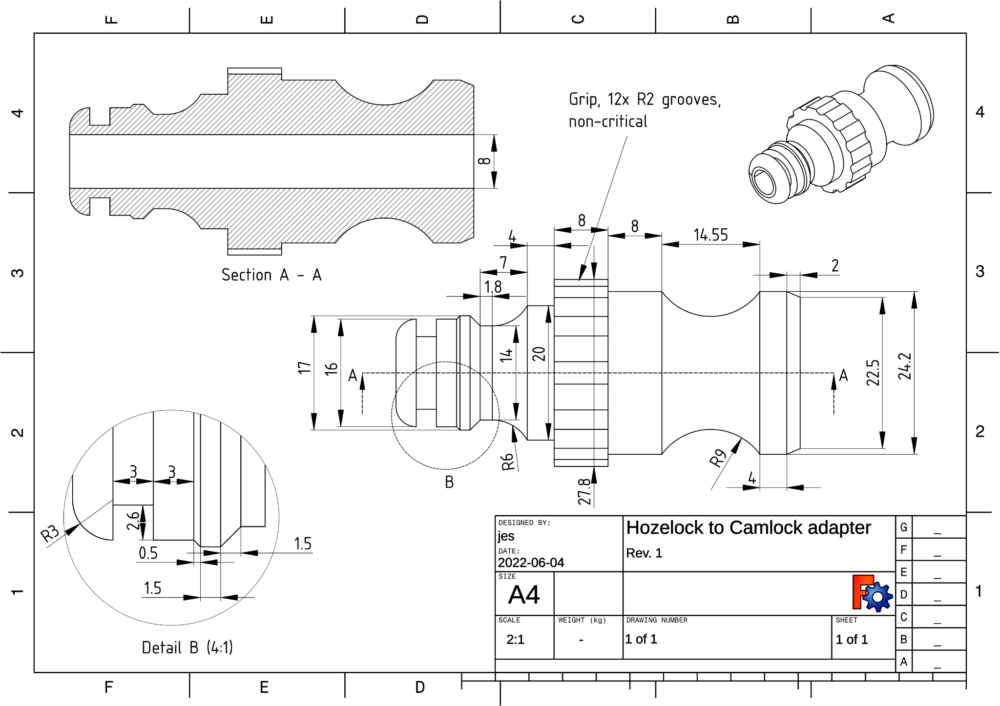
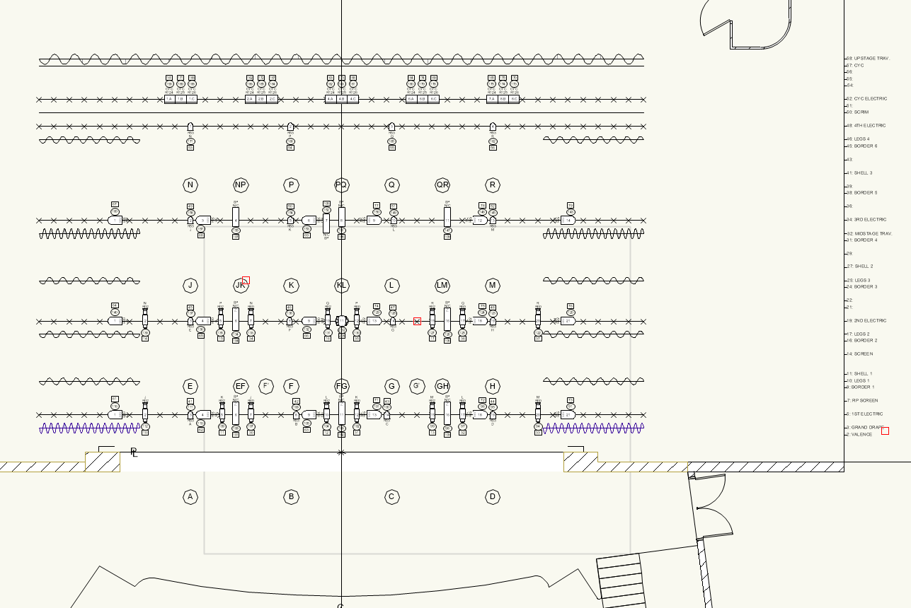
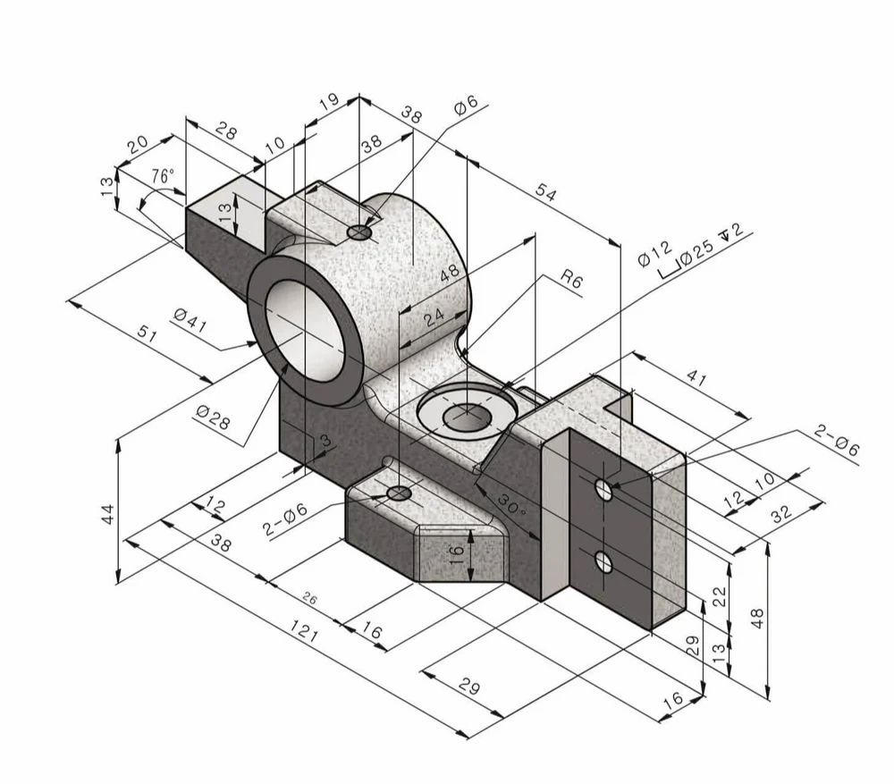
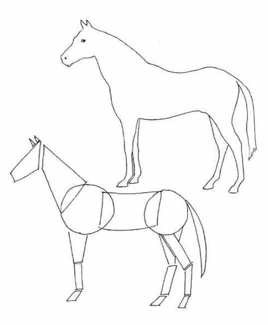
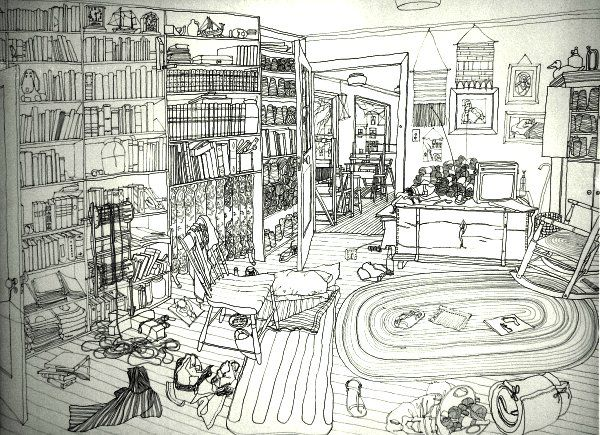
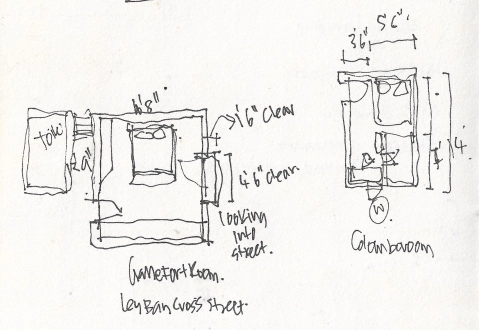
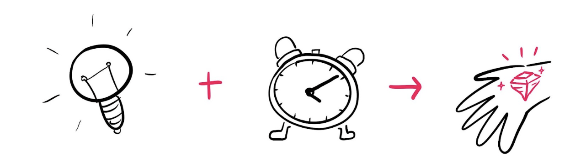

Engineering Communication
We've seen how hard it is to explain how something works using only words. Even with well-written instructions, it's easy to miss a detail, misunderstand a step, or imagine the wrong part.

To operate the robot arm, begin by pulling the first string on the left side slowly to raise the claw. Then, once the claw is at the desired height, pull the second string to rotate the arm counterclockwise. After that, gently release the first string to lower the claw toward the object. To grip the object, pull the third string connected to the claw's closing mechanism. Be careful not to release the other strings too quickly, as this may cause the arm to shake or drop the object.
Do both of these examples convey the same information to the user?
Pictures can help communicate complex information at a glance. They work especially well showing structure, shape, and relationships between parts. But a single image can't always show the order of steps or the nuanced actions involved in a process. That kind of detail is often more easily explained with words.




To help communicate specific details, different types of technical drawings use their own sets of symbols and conventions. Almost like a visual language.
Other professions, for example bakers, use their own language: abbreviations for measurements, symbols for temperature, and specific words for techniques like folding or whisking.
In the same way, technical drawings use specialized symbols to quickly and clearly communicate important details. We'll be looking at many different types of technical drawings in this class and will learn to interpret each one.
Not every drawing needs to be a fully detailed technical drawing. Sometimes, a quick sketch is all it takes to share an idea, plan a solution, or explain how something works. Sketching is one of the fastest ways to think visually and collaborate with others.
Engineers don't need to be artists, but they do need to make clear, useful sketches that communicate shape, size, structure, and function, especially in the early stages of design.
Here are some tips that will help you create sketches to illustrate your point.
Larger sketches make it easier to show detail and add labels, so use the whole page instead of a cramped corner.
Break objects down into boxes, circles, and lines before adding detail, the same way this horse starts as simple blocked-in shapes.

Use light lines to block out your sketch first. You can always erase or darken lines later.
Careful spacing, alignment, and clear lettering make a sketch far more useful to the people reading it.

Add estimates or exact values for length, width, and height whenever you know them.

A sketch doesn't have to be beautiful, it just has to make sense to whoever reads it next.

A quick-sketch creativity game
I'll show you an image of an object, or two objects, and you'll be asked to do one of the following:
Click to start the round
Click to draw your cards →
Time's Up!